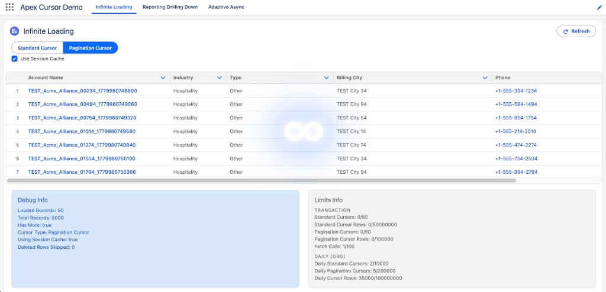

Scaling Apex and LWC with Apex Cursors

Learn how Apex Cursors, including Pagination Cursors, help scale async Apex workloads versus Batch Apex patterns and enable LWC infinite scrolling list UIs beyond the 2k OFFSET ceiling. You will see both standard and pagination cursors, fetch patterns, and when to use Apex Cursors to optimize heap management and page loading times, including sharing cursors between users. You will leave with sample code, tips, and concrete patterns to scale your Apex skills and your apps!
King's Vault · 3:35 pm – 4:00 pm
Resources
AndyInTheCloud Consulting Ltd Services
I'm a former CPO at Heroku (Salesforce) and former CTO at FinancialForce.com (now Certinia), now working as an independent Salesforce consultant, architect, and open-source contributor. I focus deeply on Salesforce platform development, Heroku integrations, and emerging AI patterns and agentic architectures.
Review my LinkedIn profile to learn more, and feel free to connect to discuss how I can be of assistance.